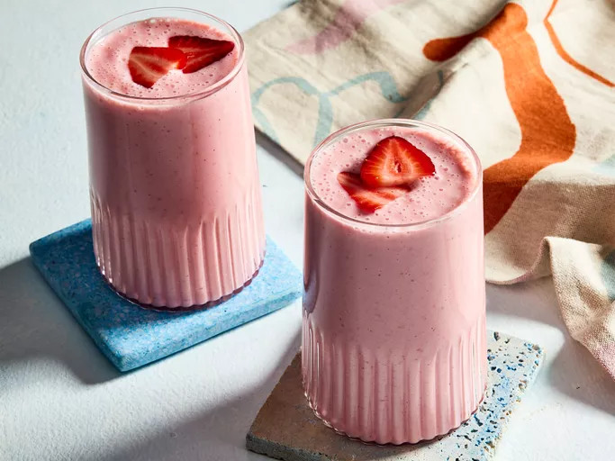

Home
Hamburger Recipe
Avocado Recipe
Fruit and Yogurt Smoothie

Description
This yogurt smoothie recipe is delicious! You may substitute the
strawberries for any other berries or fruit.
Ingredients
-
1 cup strawberries
-
1 banana
-
½ cup yogurt
-
¼ cup pineapple juice
-
½ teaspoons white sugar
-
1 teaspoon orange juice
-
1 teaspoon milk
Steps
-
Gather all ingredients.
-
Combine strawberries, banana, yogurt,
pineapple juice, sugar, orange juice,
and milk in a blender.
-
Blend until smooth.